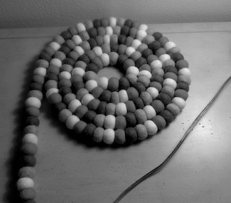
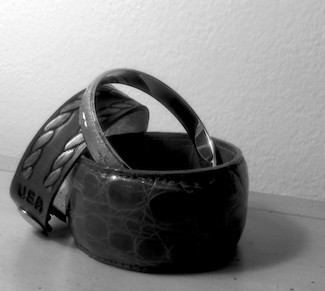
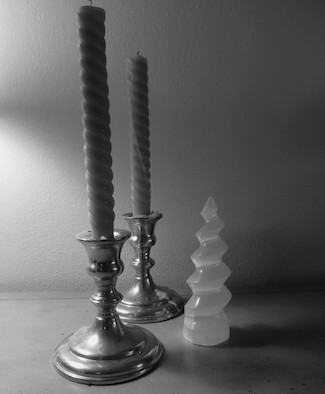

Over winter break, I took an Intro to Photography class. I haven't taken an art class since
high school, and I was excited to do so again. Each week had a different assignment. For the
photos I'm including here, we were tasked with posing our own still-lifes, and they had to
include a repeated shape. In these four photos, you can see circles, spirals, and wispy lines.
Entitled: Stand-alone
Entitled: Lost
Entitled: Folded
Entitled: Militant